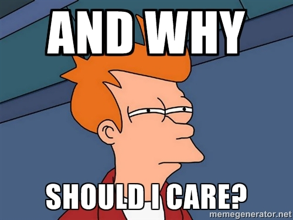
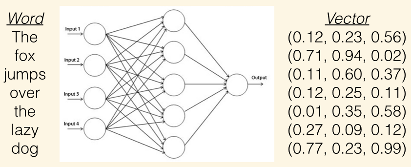
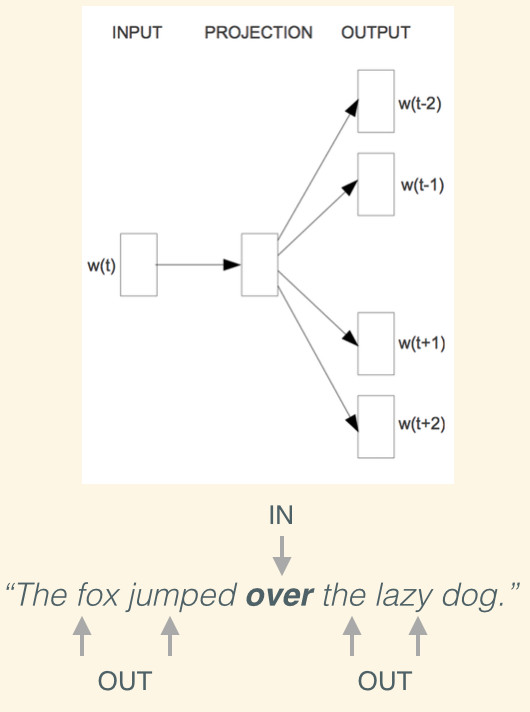

word2vec/doc2vec
Efficient Estimation of Words in Vector Space

NYCDSSG demo by: Eric Xu
Agenda
- Popular Methods for Sentiment Analysis
- What is Word2Vec/Doc2Vec?
- Demo: Word Vectors as Machine Learning Features
- Doc2Vec Beyond NLP
What is Sentiment Analysis?
Sentiment analysis is the attempt to derive the emotion or "feeling" of a body of text.
Applications of Sentiment Analysis

- The Obama administration used sentiment analysis to gauge public opinion ahead of the 2012 election.
- Brands responding to social media comments in reaction to Super Bowl ads.
- Shifts in sentiment on social media have been shown to correlate with shifts in the stock market.
Popular Approaches to Sentiment Analysis
- Use a dictionary of good and bad words
- Bag-of-Words as features for a classifier
Dictionary of Good and Bad Words
- {"good words": ["good", "great", "amazing"]} +1
- {"bad words": ["bad", "aweful", "terrible"]} -1
- "This pizza is amazing!" = 1
- "Last night's movie was aweful. = -1
- "I want their new cd so bad!" = -1 (wrong)
Bag-of-Words
- Each review is treated as a 1 by N vector, where N is the size of the vocabulary.
- Each column is a word, and the value is the number of times that word appears.
- "bag of bag of words" = [2 ,2, 1]
- Bigrams:
- Trigrams:
The quick brown fox jumps over the lazy dog.
The quick brown fox jumps over the lazy dog.
The quick brown fox jumps over the lazy dog.
The quick brown fox jumps over the lazy dog.
Limitations of BoW and BoNG
- BoW ignores context and word order.
- “That’s true, I am not a fan.”
- “That’s not true, I am a fan.”
- BoNG captures context but leads to very large feature space.
- Both ignore semantics of the words. For example, “wine,” "whiskey” and “football” are equally distant.
Word2Vec by Google
- Attempts to associate words with points in space. The spatial distance between words then describes the relation (similarity) between these words.
- Captures word context and preserves more linear regularities between words.
- Has lower computational complexity than previous neural network language models.
Word2Vec by Google
- Simple neural network with a single hidden layer and uses softmax regression to compute the probability distributions.
- The models are trained using stochastic gradient descent and back propagation to minimize the loss function.
Word2Vec: Continuous Bag-of-Words
CBOW predicts the current word based on the context.
Word2Vec: Skip-gram (default)
Skip-gram predicts surrounding words given the current word.
Linguistic Regularities in Word Vector Space
- Word2Vec's distributed representations of words contain surprisingly a lot of syntactic and semantic information.
- Can use basic algebra between word vectors to find relationships between words:
king - man + woman = ?
Linguistic Regularities in Word Vector Space
Let's Take Her For a Spin!
We'll use the pre-trained vectors from the Google News dataset
(about 100 billion words)
Linguistic Regularities in Word Vector Space
| Expression | Nearest Token |
|---|---|
| Paris - France + Italy | Rome |
| bigger - big + cold | colder |
| sushi - Japan + Germany | bratwurst |
| Cu - copper + gold | Au |
| Windows - Microsoft + Google | Android |
| Montreal Canadiens - Montreal + Toronto | Toronto Maple Leafs |
Word2Vec Use Cases
- ThisPlusThat: a search engine that lets you "add" words as vectors.
Doc2Vec: Beyond Word2Vec
An unsupervised algorithm that learns fixed-length feature representations from variable-length pieces of texts, such as sentences, paragraphs, and documents.
- Quoc Le and Tomas Mikolov, 2014
Word2Vec Approach
Calculate the vector of sentences by averaging the vector of their words.
Doc2Vec
Doc2Vec: Distributed BOW Model
A paragraph vector simply extends the context to the whole document.

Demo: IMDB Sentiment Analysis
- Positive-Negative Word Dictionary (AUC 0.79)
- Bag-of-Words (AUC 0.87)
- Word2Vec (AUC 0.92)
- Doc2Vec (AUC 0.94)